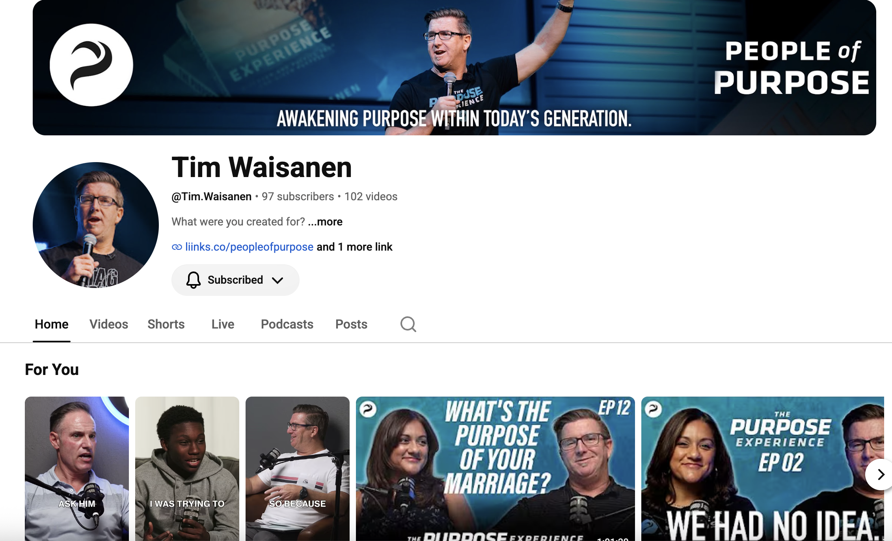
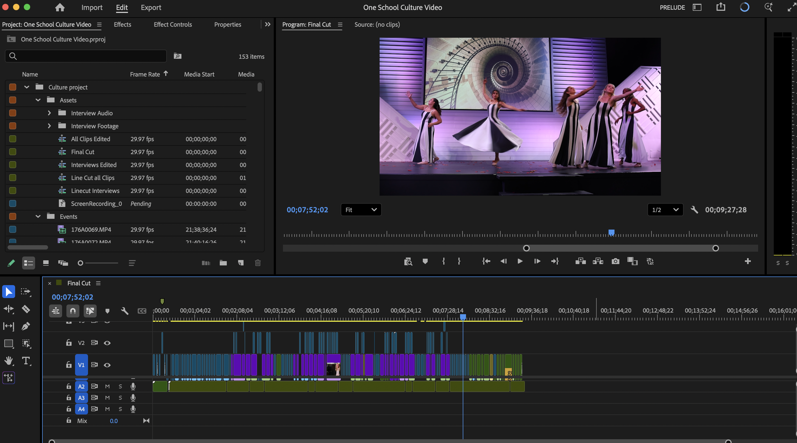
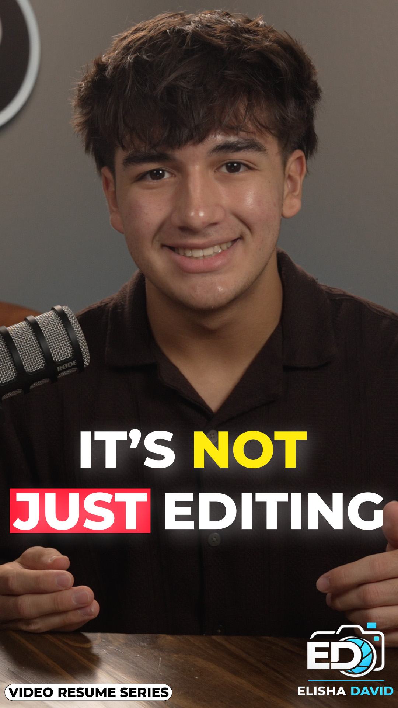
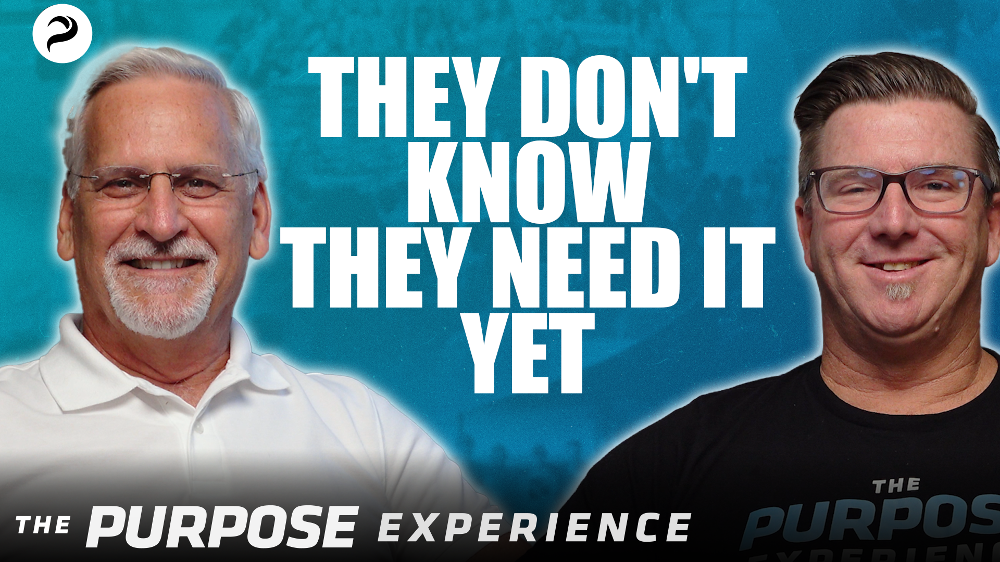
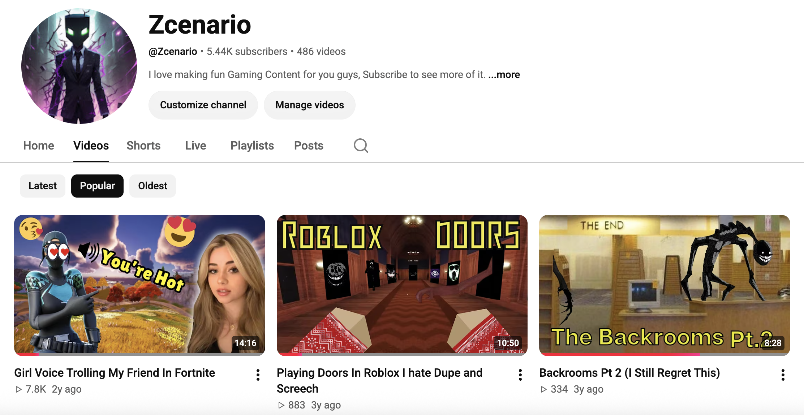

Student | Video Editor | Future Social Media Manager
Welcome to my personal resume website! My name is Elisha Waisanen, and I am a senior in high school and a dual enrollment scholar. I plan to work as a freelance social media manager and digital marketer in the future. I am a very creative person, and one of my strongest skills is video editing. I enjoy creating content and finding new ways to make videos entertaining and engaging. Some of my favorite hobbies include hanging out with friends, gaming, and video editing. I also play flag football as a wide receiver, and I love playing football with my friends. My family includes four people, including my younger sister, and we also have a dog. I hope to continue improving my skills in digital media and turn my creativity into a career.
You can find my content and projects at the links below.
An example of YouTube channel growth, with videos, thumbnails, and social media management.

This is a screenshot of a video editing project in Adobe Premiere Pro. It demonstrates video production, editing, and organization.

A video thumbnail designed for a video resume series. This demonstrates graphic design and content creation.

A promotional thumbnail for The Purpose Experience, demonstrating the use of typography, photography, and visual design.

A gaming YouTube channel featuring video thumbnails, gaming content, and video production.
